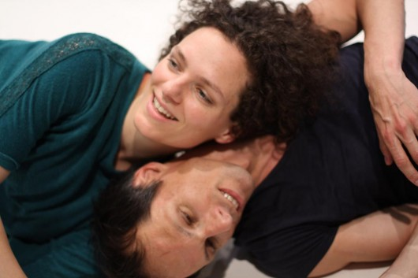

Verein rollingpoint

Der Verein rollingpoint –“Verein für Contact Improvisation und artverwandte Tanz- und Bewegungsformen” wird von maRia Probst und Christian Apschner geleitet und wurde 2001 von Sabine Parzer, Christian Apschner und Ruth Haslmaier gegründet. Ziel ist die Förderung der Contact Improvisation und artverwandter Bewegungsformen von zeitgenössischem Tanz über Somatic Movement bis hin zu Körperarbeit. rollingpoint forscht seit seiner Gründung mit viel Einsatz, Freude und Idealismus an zeitgenössischem Tanz und Contact Improvisation als Methoden somatischen Lernens. rollingpoint verfolgt die Philosophie eigenverantwortliches Lernen zu fördern und Körperwissen als "open source" Ressource zur Verfügung zu stellen. Die Qualität unserer Arbeit ergibt sich aus einer differenzierten Reflexion und Zusammenschau unterschiedlicher Wissensdisziplinen und in einem künstlerischen Kontext. rollingpoint ist Ort für Erfahrungsaustausch aller an der Weiterentwicklung der CI und artverwandter Tanzformen Interessierter und bildet ein Netzwerk verschiedenster Aktivitäten. Arbeitsschwerpunkte von rollingpoint sind die Organisation und Leitung von Workshops, Research-Projekten, Jams und Festivals. Ein viertägiger Workshop mit Martin Keogh aus den USA bildete den gelungenen Start im November 2001. Seitdem finden fortlaufende Semesterkurse abgestimmt auf Menschen mit unterschiedlichen Bewegungshintergründen statt. Zusätzliche Wochenend- und Mehrtages-Intensiven ermöglichen tiefer in spezifische Themen einzutauchen. Der rollingpoint-Newsletter informiert in unregelmäßigen Abständen über die Aktivitäten des Vereins, verweist auf Kooperationen und dem Vereinszweck nahe stehende Initiativen in Wien und Österreich. maRia und Christian von rollingpoint sind sowohl pädagogisch und künstlerisch sowie auch als KörpertherapeutInnen tätig und verfügen über langjährige Lehrerfahrung im In- und Ausland. Sie wurden u.a. mehrfach eingeladen ihr Arbeit beim Internationalen Seminar für körperbezogene Psychotherapie, Körpertherapie und Körperkunst in Bad Gleichenberg vorzustellen und arbeiten mit Institutionen wie Tanzquartier Wien, Impulstanz, Im-flieger, dem Verein MAD und dem Kognitionsforscher Michael Kimmel zusammen. |